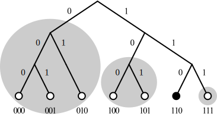

Introduction¶
What is DHT?¶
在解釋Kademlia前先說說DHT的概念，DHT為distributed hash table(分散式雜湊表)的縮寫，概念上來說，每筆**data**都有對應的key，只要給定key就能從網路上取得data。

應用在這專案中(P2PLending)來解釋，只要有ID，就能找到對應的借貸資料，或是另一位peer
What is Kademlia?¶
Kademlia是一種DHT演算法，將peer與檔案視為同構，也就是說檔案ID與peer ID可以相同，而演萬法上也會把檔案存在相同ID的peer上。
How Kademlia work?¶
Kademlia將整個系統映射至二元樹上，所有ID都是一組只有0或1的bit字串，0為左子樹，1為右子樹。以下先解釋幾個概念
XOR距離運算¶
任意兩ID進行XOR運算結果定義為彼此的距離
Kbucket¶
對於任何一個節點來說，由root開始算，將不包含自己的子樹劃分出來即為一個Kbucket，K代表這bucket最多會存著K個節點。只要所有Kbucket都至少存有一個節點，該節點就可以遍歷整個網路
路由機制¶
Getting start¶
所有資料傳輸都遵循以下規則:
Kademlia initial¶
自己一人是無法構成網路的，想要拓展自己的網路就要先update一個已知節點的資料，向對方發出GET node SelfID請求，也就是請對方找自己，Kademlia節點只要收到任何請求都會先將對方update進自己的bucket然後才執行其他動作，當收到GET node SelfID的請求時，對方就會將自己加入bucket中，然後回傳對方bucket中離自己最近的其他節點，再向這些節點發出請求，如此遞迴下去，就能完備自己的bucket資料
update¶
跟新一個節點到自己的bucket內，如果bucket已到達上限K，就會檢查最舊的節點有無響應(ping他)，如果有，就把該節點移到最前面(視為最新)，並捨棄新加入的節點，否則就刪除舊節點加入新節點。
LookUp¶
當執行LookUp會看自己的bucket內有無該節點，有就直接回傳，否則會開始依參數a分a個thread下去調度同bucket內的其他節點發出GET node請求，其他節點收到請求後，如果自己存有該節點資料就會直接回傳，否則會回傳K個最接近的節點
UpLoad¶
上傳的檔案會先將內容進行Hash，所得到的Hash code即為目標節點，將檔案送往目標節點，途經的各點都會將檔案存於本地，並往下遞迴執行UpLoad，同時將送下去的節點資訊回傳給最初呼叫UpLoad的節點，如果送往目標後，目標節點匯兌最靠近自己的K個節點執行UpLoad
DownLoad¶
當你有一段Hash code，就能往目標節點執行Get file，途中經過的節點如果存有該檔案，就會直接回傳檔案，否則就繼續執行Get file，同時將送下去的節點資訊回傳給最初呼叫Get File的節點
Security¶
Peer間彼此要安全的通訊，我們依照TLS流程進行資料加密，詳細的原理與組成如下:
Diffie–Hellman key exchange¶
迪菲－赫爾曼金鑰交換是在美國密碼學家惠特菲爾德·迪菲和馬丁·赫爾曼的合作下發明的，通過公共信道交換一個資訊，就可以建立一個可以用於在公共信道上安全通訊的共用秘密（shared secret）。，
RSA加密演算法¶
RSA加密演算法是一種非對稱加密演算法，使用者可以產生一個公鑰和一個私鑰。
假如Alice想給Bob遞移一個署名的訊息的話，那麼她可以為她的訊息計算一個雜湊值（Message digest），然後用她的私鑰「加密」（如同前面「加密訊息」的步驟）這個雜湊值並將這個「署名」加在訊息的後面。這個訊息只有用她的公鑰才能被解密。Bob獲得這個訊息後可以用Alice的公鑰「解密」（如同前面「解密訊息」的步驟）這個雜湊值，然後將這個資料與他自己為這個訊息計算的雜湊值相比較。假如兩者相符的話，那麼Bob就可以知道發信人持有Alice的私鑰，以及這個訊息在傳播路徑上沒有被篡改過。，